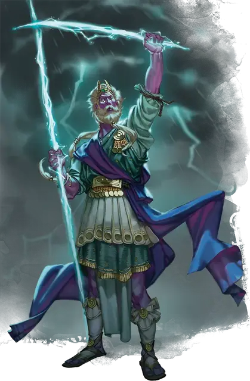

Штормовой великан призыватель бури
Storm Giant Tempest Caller
Огромный Великан (Чародей), любое мировоззрение

Класс Доспеха 17 (природный доспех)
Хиты 310 (27к12 + 135)
Скорость 50 футов, плавая 50 футов, летая 50 футов (парит)
| мод | спас | ||
|---|---|---|---|
| СИЛ | 29 | +9 | +15 |
| ЛОВ | 14 | +2 | +2 |
| ТЕЛ | 20 | +5 | +11 |
| мод | спас | ||
|---|---|---|---|
| ИНТ | 21 | +5 | +5 |
| МДР | 18 | +4 | +10 |
| ХАР | 25 | +7 | +13 |
Навыки Атлетика +15, Восприятие +10, Магия +17
Сопротивление урону холод
Иммунитет к урону звук, электричество
Чувства истинное зрение 120 футов, пассивное Восприятие 20
Языки Общий, Великаний, Первичный
Опасность 20 (25000 опыта)
Бонус мастерства +6
Особенности
Амфибия. Великан может дышать и на суше и в воде.
Легендарное сопротивление (3/день). Если великан проваливает спасбросок, он может вместо этого сделать спасбросок успешным.
Бдительный. Великана невозможно застать врасплох, и у него есть преимущество на броски инициативы.
Наблюдение (требуется Штормовая руна). Великан может использовать свой хрустальный шар [crystal ball] для накладывания заклинания наблюдение [scrying] (Сл спасброска 17).
Штормовая руна. У великана есть Штормовая руна, начертанная на хрустальный шар [crystal ball]. Пока предмет, на котором нанесена руна, находится в теле великана, он может использовать свое действие Призыв бури и свою особенность Наблюдение.
Предмет, на котором нанесена руна, имеет КД 17; 50 хитов; и обладает иммунитетом к урона некротической и психической энергией, а так же урону ядом. Предмет восстанавливает все свои хиты в конце каждого хода, но обращается в пыль, если ее хиты уменьшаются до 0 или когда великан умирает. Если руна уничтожена, великан может начертать Штормовую руну на другом хрустальном шаре, находящимся в его распоряжении, после окончания короткого или продолжительного отдыха.
Действия
Мультиатака. Великан совершает три атаки Молниевым клинком или Молниевым копьем.
Молниевый клинок. . Рукопашная атака оружием: +15 к попаданию, досягаемость 10 футов, одна цель. Попадание: 22 (3к8 + 9) рубящего урона плюс 16 (3к10) урона электричеством.
Молниевое копье. . Дальнобойная атака заклинанием: +13 к попаданию, дистанция 500 футов, одна цель. Попадание: 39 (5к12 + 7) урона электричеством.
Использование заклинаний. Великан накладывает одно из следующих заклинаний, используя Харизму в качестве базовой характеристики и без использования материальных компонентов (Сл спасброска от заклинаний 21, +13 к попаданию атаками заклинаниями):
• Неограниченно: обнаружение магии [detect magic], обнаружение мыслей [detect thoughts];
• 1/день каждое: власть над водами [control water], власть над погодой [control weather] (накладывается действием), рассеивание магии [dispel magic], уход в иной мир [plane shift], послание [sending], остановка времени [time stop].
Призыв бури (требуется Штормовая руна). Великан создает стихийный вихрь, который заполняет сферу радиусом 60 футов с центром на нём. Каждое существо в этой области, кроме великана, должно совершить спасбросок Ловкости Сл 21. В случае провала существо получает 43 (8к8 + 7) урона по выбору великана: холод, электричество или звук. В случае успеха существо получает половину этого урона.
Описание
В то время как большинство штормовых великанов мало заботят сложные детали ранжирования в иерархии, призыватели бури с гордостью претендуют на позицию на вершине этой иерархии — и мало кто осмеливается бросить им вызов. Обладающие силой рунической магии в дополнение к врожденной магии, которая течет в них, эти штормовые великаны пользуются большим уважением. Если какой-нибудь великан и сможет привлечь внимание Аннама к миру, то, скорее всего, это будет призыватель бури.
Призыватели бури вживляют хрустальные шары [crystal ball] с начертанной на них Штормовой руной в свои лбы или глазницы, позволяя им видеть сквозь магический морок. Они также могут создавать вокруг себя мгновенный вихрь леденящих ветров и грозовых облаков, погружая своих врагов в стихийную ярость.